A ring is a set  with two operations
with two operations
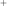
and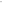
such that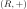
is an abelian group with neutral element ,
multiplication is associative with a neutral element
,
multiplication is associative with a neutral element  , and the
distributive laws
, and the
distributive laws 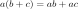
and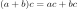
hold. The ring is commutative if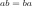
for all . A unit is an
element with a two-sided multiplicative inverse.
. A unit is an
element with a two-sided multiplicative inverse.
In any ring,
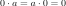
and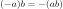
; and if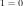
then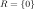
.From
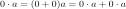
, cancelling in the additive group gives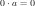
; symmetrically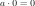
. Then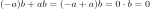
, so . If then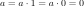
for every .
.
A subset
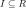
is a left ideal if it is a subgroup of and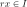
for all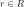
, ; a right
ideal if instead
; a right
ideal if instead 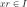
; and a two-sided ideal (here simply an ideal) if both. For commutative,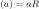
is the principal ideal generated by.
Let  be a two-sided ideal of . Then the additive quotient
group
be a two-sided ideal of . Then the additive quotient
group
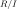
is a ring under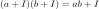
, and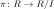
is a surjective ring homomorphism with kernel.
is abelian, so is a normal subgroup of it and is
an abelian group. For the product, suppose
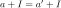
and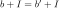
, say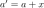
and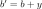
with . Then
. Then 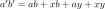
, and each of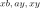
lies in because absorbs multiplication on
both sides; hence 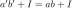
and the product is well defined. Associativity, distributivity and the identity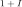
are inherited from term by term. The projection preserves both operations by
construction, and 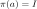
says .
.
The proof shows precisely why a subring is not enough: well-definedness needed
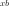
and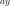
to lie in for arbitrary 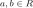
, which is absorption, not closure under multiplication. In the
subring is itself and the ideals are the
the
subring is itself and the ideals are the 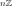
– and it is the latter that produce modular arithmetic.A ring homomorphism is a map
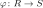
with ,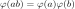
and . Its
kernel is .
. Its
kernel is .
The kernel of a ring homomorphism is a two-sided ideal, and every two-sided ideal is such a kernel.
The kernel is a subgroup of because  is additive,
and if
is additive,
and if
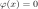
then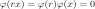
and likewise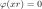
; so it absorbs on both sides. Conversely an ideal is the kernel of .
For a ring homomorphism , the image
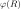
is a subring of and
and
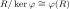
as rings, via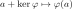
.
The image contains and is closed under sums, negatives and
products because preserves them, so it is a subring. By the
first isomorphism theorem for the additive groups, the stated map is a
well-defined isomorphism of abelian groups onto , the
cosets of  being the fibres of . It is
multiplicative and unital because
being the fibres of . It is
multiplicative and unital because
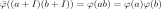
and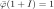
.